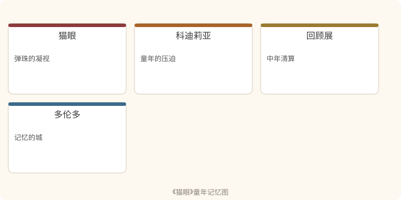

猫眼
一、基本信息
| 作者 | 阿特伍德 |
|---|---|
| 成书/出版 | 1988年（作者页 B107 口径：猫眼（1988）） Margaret Atwood — Encyclopaedia Britannica（百科全书） |
| 国别/地区 | 加拿大 |
| 时代 | 现当代 · 20世纪 |
| 体裁 | 长篇小说 |
| 语言 | 英语 |

《猫眼》童年记忆图（主题·结构图）
二、创作背景
作者页（B107）：阿特伍德 major_works 载'猫眼（1988）'（B107 作者页定位，详见 shinv 条核对）。
题材（通说待核）：画家伊莱恩回多伦多办回顾展——童年友情的'战争'记忆。
三、内容脉络
回顾展触发童年记忆：科迪莉亚与'猫眼'弹珠（通说待核）。
四、主要人物表
| 人物 | 身份 | 说明 |
|---|---|---|
| 伊莱恩 | 画家 | （通说待核） |
| 科迪莉亚 | 童年玩伴 | 压迫者（通说待核） |
五、主题与艺术特点
- 童年霸凌的创伤记忆（通说）。
- 女性友谊的暗面（通说待核）。
- '猫眼'弹珠的凝视（通说待核）。
六、影响与评论
- 作者页：阿特伍德代表作（B107 作者页口径）。
Margaret Atwood — Encyclopaedia Britannica（百科全书） - 1989年布克奖入围（通说待核）。
Margaret Atwood — Encyclopaedia Britannica（百科全书）
七、阅读建议
难点
- 记忆的时间跳跃。
- 女性友谊的复杂性。
- 《猫眼》（河南大学出版社/译林版本，通说待核）。
- 英文原版。
先《使女的故事》后本作。
八、待核实
- 1988年出版（McClelland & Stewart说）核对。
- 伊莱恩/科迪莉亚人名核对。
- 布克入围说待核。
本页主要来源
阿特伍德的其他收录作品：使女的故事